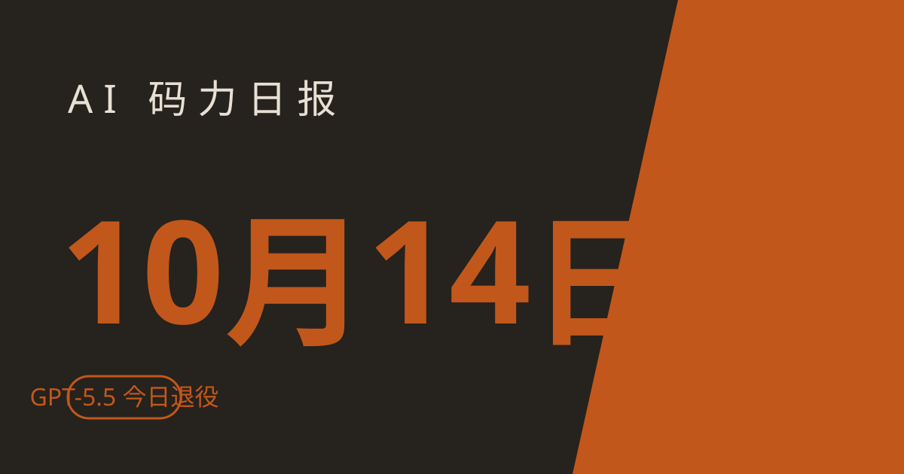

AI 码力日报 · 2026年10月14日

⚡ 一句话速览
- OpenAI 的 GPT-5.5 今天从 ChatGPT、ChatGPT Work 和 Codex 退役：凡是把模型名写死在配置、脚本和定时任务里的，今天不改就会报错；API key 调用不受影响。
- Google 把 Gemini 4 Argon 全面开放给开发者和企业：API 介绍价 $2/$10 每百万 token，11 月 30 日后翻倍到 $4/$20。
- Anthropic 公布反蒸馏防御战果：三层防护让攻击者从 Claude 提取的推理数据下降 90%–99%，已封禁数万个关联账号。
- 昨天 Codex 全线（Web/API/CLI/VS Code）在 GPT-6.1 Sol 上性能降级了 8 小时，官方已修复；昨天要是用 Codex 觉得卡，不是你的问题。
🤖 今日 AI Coding 动态
OpenAI：GPT-5.5 今天退役，钉版的人抓紧改
就是今天，10 月 14 日。GPT-5.5 从 ChatGPT、ChatGPT Work、Codex 三个入口下线——9 月 15 日就宣布了，今天是最后期限。普通聊天会自动切新默认，真正要动手的是这几类人：workspace 默认模型里写了 gpt-5.5 的、自定义 agent 配置里钉死的、定时任务和脚本里硬编码的。今天不改，跑起来就是报错。
官方迁移指引是切到 GPT-6.1 Sol（Codex 侧）或 GPT-6 Astra。用 API key 的调用不在退役范围内，照常用。顺带一提，Codex 里 GPT-6.1 Sol 的默认上下文已经提到 500k（负责人 10 月 12 日在 X 上宣布的，changelog 还没跟上），长会话被强制压缩的频率会低很多。｜
Google：Gemini 4 Argon 全面开放，介绍价 11 月底翻倍
Google 昨天（10 月 13 日）把 9 月底首发的旗舰模型 Gemini 4 Argon 全面开放了：开发者用模型 ID gemini-4-argon 经 Gemini API 付费层、AI Studio、Android Studio 调用；企业走 Gemini 平台；订阅用户在 Gemini App 和 AI Mode 里用。
价格是关键信息：介绍价 $2/百万输入、$10/百万输出（缓存输入 95% off），11 月 30 日之后翻倍到 $4/$20。Google 宣称它在 Vals Index 排第一，自家 Antigravity 团队用它做 agentic 代码提交涨了 35%、回滚少了约三分之一——官方自卖自夸，听听就好，值不值这个价得自己跑分。
我的建议：做 agent 和代码迁移工作流的人，可以趁介绍价窗口评估一下；但长期预算按翻倍后的价格做，别被首发价锚定了。｜
Anthropic：反蒸馏防御战果公布，agent 开发者注意 preserved thinking
Anthropic 发研究帖公布了反蒸馏的三层防御战果：preserved thinking + 双阶段分类器 + 两小时内封号，让攻击者从 Claude 提取的推理数据下降 90%–99%，已经封了数万个关联账号，还点名了智谱 Z.ai 在训练 GLM-5.3 时试图蒸馏 Claude 的网络能力。
对开发者真正要紧的是 preserved thinking 这条：2026 年 8 月 31 日之后创建的新 API 账号已经强制执行——agent 不能再改写 Claude 的历史上下文，否则 API 直接报 400（Invalid signature in thinking block）。凡是靠改写/压缩对话历史做上下文管理的 agent 集成，在新账号上会直接报错，得改走官方的上下文压缩路径。老账号暂时不受影响，但早晚得迁。
另外 Anthropic 今天首次向机构投资者披露 Q3 财报，为可能的 IPO 铺路（传闻估值 2 万亿美元）——上市临近，API 定价和免费额度政策都值得盯紧。｜｜
社区：Codex Desktop 45 分钟烧掉 1000 万 token，根因找到了
官方社区论坛这两天最热的帖子：有用户实测 Codex Desktop 跑 46 分钟，产生了 76 次模型响应、累计 1007 万 token。楼主做了详细的 token 会计，根因指向 code-mode 的 exec 结果绕过了 truncation 策略，而且 context 预估不统计 tool-result 块——界面显示的上下文用量远低于真实消耗，$500 档用户是重灾区。
昨天（10 月 13 日）Codex 全线还在 GPT-6.1 Sol 上降级了 8 小时（北京时间 16:18 到次日 00:36），官方上了 mitigation 后恢复。两件事叠在一起，昨天用 Codex 的人估计体验都不太好。提醒一句：跑长任务前先看一眼状态页，别在故障窗口里烧额度。｜
🐑 今日羊毛
Qoder CN：每天领 100 通用 Credits，Qwen3.8-Flash 持续 0.0× 免费
一句话：阿里 Qoder 的双重福利——每天可领 100 通用 Credits（30 天有效、可累积），叠加 Qwen3.8-Flash 模型计费系数 0.0×，调用不扣任何 credits。
- 怎么薅：打开 Qoder 桌面端（CN 版）登录账号，点左下角用量面板的礼物图标，每天 10:00 开放新一轮领取（到次日 10:00 前有效，错过不补）；模型选择器选 Qwen3.8-Flash，确认显示 0.0× 后直接用。
- 有效期：每日领取长期有效（官方称暂无结束时间）；Flash 免费结束会提前公告（截至撰写时）
- 适合谁：所有程序员，免费用户也能领；一个月约 3000 credits 进账，零成本
豆包工作：新一轮 30 天订阅免费领，老用户可叠加
一句话：豆包工作电脑版新一轮 30 天订阅权益，所有用户可领，上一轮领过的也能再领；已付费用户新增时长自动顺延。
- 怎么薅：下载/升级到最新版豆包工作电脑版，登录豆包账号，按客户端内活动提示领取，到「设置 → 订阅与额度管理 → 订阅记录」确认到期时间已延长。
- 有效期：本轮进行中（10 月上旬报道，无明确截止，建议尽快，以客户端内实际页面为准）
- 适合谁：所有豆包用户，白拿一个月会员
WorkBuddy：Hy3/Hy4 preview 限免延长至 10 月 31 日
一句话：WorkBuddy 免费活动延长到 10 月 31 日，Hy3 全时段限免；之前体验过 Hy4 preview 的用户，每天 23:00 到次日 8:00 可继续用免费额度。
- 怎么薅：打开 WorkBuddy 新建对话，点模型选择器选 Hy3 或 Hy4 preview，直接开聊，不用领券。
- 有效期：至 2026-10-31（截至撰写时，以客户端内实际页面为准）
- 适合谁：想免费用国产 coding agent 写代码的人
⭐ 今日 GitHub 热门项目
vercel-labs/skills：一条命令给所有 agent 装技能
一句话介绍：开放 Agent Skills 生态的命令行工具（npx skills），一键从任意 Git 仓库安装可复用的技能包。解决什么问题：Claude Code、Codex、Cursor 等 75+ 种工具的技能格式各异、手动配置繁琐，它把技能的发现、安装、更新、删除统一成一条 CLI。⭐ 约 3.4 万（截至撰写时）。适合：重度用多个 coding agent、想跨工具复用技能库的人。
lyogavin/airllm：单卡跑起 2.8T 的大模型
一句话介绍：让超大 LLM 在单张小显存显卡上跑起来的推理库——Kimi K3（2.8T）只需 4GB 显存，DeepSeek-V3（671B）约 12GB。解决什么问题：大模型推理吃显存，它通过逐层流式加载权重加专家按需读取，无需量化就能把 70B–2.8T 模型跑在消费级显卡上。⭐ 约 3.8 万（截至撰写时）。适合：想在本地单卡跑超大开源模型、做 agent 后端自托管的人。
debpalash/VoiceStudio：本地化的 ElevenLabs 平替
一句话介绍：开源、完全本地化的语音 AI 工具箱：语音克隆、声音设计、视频配音、听写转写、有声书制作，支持 646 种语言，带桌面 App、本地 API 和 MCP 接口（能被 agent 调用）。解决什么问题：语音 AI 依赖云端订阅，又贵又有隐私顾虑，它把全套工作流搬到本地硬件（CUDA/Metal/CPU 都行）。⭐ 约 6.3 万（截至撰写时）。适合：做短视频/播客配音、需要本地语音转写的人。
xtool-org/xtool：在 Linux 上开发 iOS 应用
一句话介绍：跨平台 Xcode 替代品，在 Linux、Windows、macOS 上用 SwiftPM 构建、签名并部署 iOS 应用。解决什么问题：iOS 开发被锁死在 macOS + Xcode，它用开放标准复刻打包、签名、装机等核心能力。⭐ 约 0.9 万（截至撰写时）。适合：iOS/Swift 开发者、在 Linux 服务器上跑 iOS CI 的团队。
🛠️ 值得一试的工具：Ruflo
是什么：Cognitum One 昨天（10 月 13 日）发布的开源多 agent 编排"元框架"（MIT 协议）。核心理念是"agent = 模型 + harness"：把单个 coding assistant 变成 100+ 专业 agent 的协调团队，并行做调研、写代码、测试、安全审查；带统一控制平面，能看到跑了什么、花了多少钱，关键节点可人工审批。
解决什么痛点：Claude Code、Codex 用户用单 agent 干复杂工程活时力不从心，多 agent 又难编排、难审计成本——Ruflo 把 harness 这层标准化了。免费额度：MIT 开源完全免费（模型调用费另算），npx ruflo@latest init 一行上手。
verdict：值得试——7.4 万 star 的社区基本盘（截至撰写时）说明不是纸上谈兵，npx 一分钟可跑；正好接住 Claude Code 用户"想要 agent 团队"的真实需求。提醒一句：发布消息源是厂商付费通稿，营销话术先打个折，先试开源核心。
🎓 3 分钟小教程：每天薅满 Qoder 的 100 Credits
前置条件：注册一个 Qoder CN 账号（免费），装 Qoder 桌面端。
- 每天 10:00 后打开 Qoder，点左下角用量面板的礼物图标，领 100 通用 Credits（30 天有效，可累积，次日 10:00 前领有效）；
- 模型选择器切到 Qwen3.8-Flash，确认计费系数显示 0.0×；
- 日常写代码、问答全用 Flash（不扣费），攒下的 Credits 留给 GLM、DeepSeek 等付费模型做复杂任务。
预期效果：零成本获得"每日 100 credits + 无限次 Flash 调用"的长期免费 coding 额度，一个月约 3000 credits 进账。Flash 免费结束官方会提前公告，记得偶尔看一眼公告。
数据截至撰写时，仅供参考。